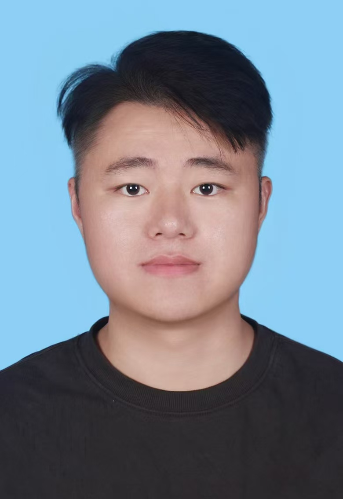

|  | Haihong Xiao(肖海鸿) |
| Lecturer @ Hefei University of Technology (HFUT) | |
| E-mail: hhxiaowv [at] gmail.com | |
| Google Scholar ORCID |
I am currently a lecturer at the School of Computer and Information, Hefei University of Technology (HFUT). I received my Ph.D. from South China University of Technology (SCUT) in June 2025, advised by Professor Wenxiong Kang. From 2023 to 2024, I was a CSC-sponsored visiting Ph.D. student at Nanyang Technological University (NTU), Singapore, working with Professor Ying He from the College of Computing and Data Science. My research spans 3D computer vision, scene representation learning, and spatial AI. Over the past three years, I have published over 10 papers in prestigious venues, including IEEE Transactions journals and top-tier conferences. I am also a co-inventor of three granted patents. I have contributed to major research projects, including the National Key R&D Program and the General and Young Scientists Programs of the National Natural Science Foundation of China (NSFC). I also serve as a reviewer for leading journals such as IEEE TIP, TVCG, TCSVT, and TITS, as well as premier conferences like ICCV, AAAI, and ACM MM.
News
- ⭐ We have open-sourced SplatCo for detail-preserving rendering of large-scale unbounded scenes!
.
- 2025-11: One paper accepted to TIP (IEEE Transactions on Image Processing) 2025!
- 2025-06: One paper GAP-MVS accepted to TCSVT 2025!
- 2024-12: One paper Tri2plane accepted to TMM 2024!
- 2024-10: Awarded the 2024 National Scholarship (1st place, 2024)!
- 2024-06: One paper EA-MVS accepted to TCSVT 2024!
- 2023-12: One paper IAMSSC accepted to TITS 2023!
- 2023-06: One paper PointDC accepted to ICCV 2023!
Publications
- [Selected Papers]
- [Full List]
- [G o o g l e Scholar]
- ( † equal contribution.)
Selected Pre-print Papers
Recent Published Papers
Professional Activities
-
Journal Reviewer:
- IEEE Transactions on Image Processing (TIP)
- IEEE Transactions on Visualization and Computer Graphics (TVCG)
- IEEE Transactions on Intelligent Transportation Systems (TITS)
- IEEE Transactions on Circuits and Systems for Video Technology (TCSVT)
- IEEE Internet of Things Journal (IOTJ)
- Information Fusion
- Pattern Recognition (PR)
- Neural Networks (NN)
- Knowledge-based Systems (KBS)
- Neurocomputing (NC)
-
Conference Reviewer:
- International Conference on Computer Vision (ICCV)
- AAAI Conference on Artificial Intelligence (AAAI)
- ACM International Conference on Multimedia (ACM MM)
- Pattern Recognition and Computer Vision (PRCV)
Awards
- National Scholarship (Top 1%, 1st place), 2024
- China Scholarship Council (CSC) Scholarship，2023
- President's Scholarship, South China University of Technology (Top 5%), 2024
- President's Scholarship, South China University of Technology (Top 5%), 2023
- Outstanding Graduate Award, Nanjing Agricultural University, 2021
Participated Research Projects
- National Key Research and Development Program of China
- Ministry of Education, Singapore, Academic Research Fund Grants
- General Program of the National Natural Science Foundation of China (NSFC)
- Young Scientists Fund of the National Natural Science Foundation of China (NSFC)